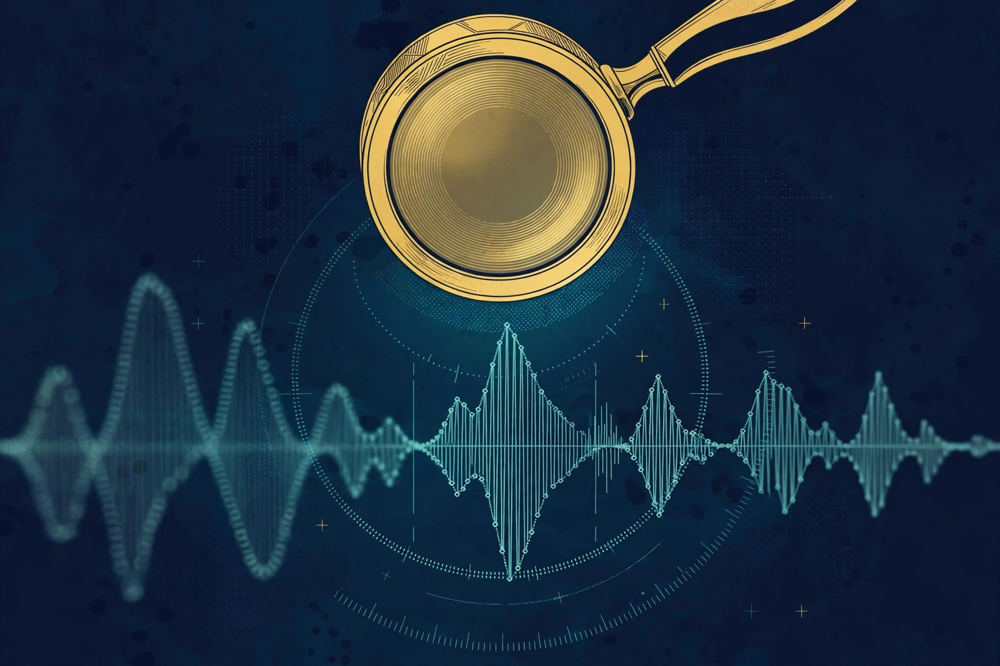

Article 04 · Health & Life Sciences · AGI Future Foundation
Diagnostic.X: AI Diagnostics Governed by a Safety Mandate
Diagnostic.X is Series 3 in the April 2026 internal W3 series list, and it is one of the few series with a published description beyond its name. The Foundation site describes it as AI diagnostics governed by an AGI-safety mandate, liability-isolated, and carries a full article summarised as an investment thesis under that same safety mandate. Those words are site copy, not a filing or a working system — but they give this series a clearer stated direction than most of its neighbours, and a heavier burden to carry.
TL;DR
Diagnostic.X (S03) is planned around AI diagnostics under an explicit safety mandate, with liability isolation as a stated design intention rather than a protection it currently enjoys. Its metaverse fabric is anchored at 5.343, 101.566 with its fabric JSON live on GitHub Pages, but the roughly two hundred GLB assets and map.wasm it references are not hosted, so it does not render fully in Artemis, and zero worlds are live on RP1. The series is intended and planned, not formed, funded, or offered.
The work
Diagnostic.X is Series 3 in the April 2026 internal W3 series list, and it is one of the few series with a published description beyond its name. The Foundation site’s article summary describes it as AI diagnostics governed by an AGI-safety mandate, liability-isolated — and the site carries a full article, “Diagnostic.X Investment Thesis”, summarised as AI diagnostics governed by a safety mandate. Those words are site copy and an article summary, not a filing, a product specification, or evidence of a working system, but they give this series a clearer stated direction than most of its neighbours: diagnostics, done by AI systems, under an explicit safety obligation.
The domain the name implies is diagnosis in the broad sense: assessment that helps a human decide what is wrong, what is at stake, and what to do next. In medicine that could mean helping a clinician interpret a test, an image, or a history; in other fields the same pattern applies — an assessment, a degree of confidence, and a recommendation that a human then judges. What matters for this series is not the breadth of possible applications but the constraint the site copy puts on all of them: a safety mandate. A diagnostic system that is wrong is not merely unhelpful; in a clinical setting it can harm. So the safety mandate is not decoration. It is the condition under which diagnostics by an AI system could be worth doing at all.
That mandate raises questions this article should name rather than answer on the series’ behalf. Who sets the safety threshold, and how is it tested? What happens when the system is uncertain — does it say so, and in a way a busy human will actually notice? Who is responsible when a diagnosis is missed or wrong, and how is that responsibility recorded? What data is the system trained and tested on, and whose cases does it handle worst? None of those questions has a verified answer for Diagnostic.X today. The Foundation site also describes, in its article summaries, an Alignment Evaluation Gate — pre-registered thresholds, an independent judge, separation of powers, and a four-domain probe architecture, whose job is to refuse to ship a model that fails its pre-registered safety evaluation. That gate is described on the home page as a proposed system, with no live feed claimed, and this article does not claim it is operating for Diagnostic.X.
Liability isolation is the other half of the site’s description, and it deserves a plain translation. The idea, as the site presents it, is that each series sits behind its own liability wall, so that a failure in one series does not contaminate the others or the parent. Whether that wall would hold in practice depends on filings, contracts, insurance, and accounting that do not yet exist for this series in any verified document. The claim on this article is therefore narrow: liability isolation is the stated design intention for the W3 series structure, not a protection Diagnostic.X currently enjoys. A reader who needs that protection to be real should ask for the designation documents and the insurance, not take a landing page’s word for it.
What would have to happen before Diagnostic.X could do real diagnostic work is a long list, and it is worth stating in order. A written scope naming the first clinical use and the first user. A safety threshold set in writing, with a named human who owns it. Test data and a test protocol that a reviewer can inspect, including the cases the system handles worst. A named clinician accountable for every diagnostic output, with agents supporting and never deciding. Regulatory counsel on what the system may and may not claim in every jurisdiction it touches. And a record-keeping design that survives an audit. None of those exists in a verified document today, and their absence is the current state of the series, stated here as such rather than hidden behind the confidence of the site copy.
Metaverse connection
Anchored world: Diagnostic.X, 5.342706937662501, 101.5663444901012. This is one of the verified anchored worlds in the Foundation’s metaverse work: a Diagnostic.X fabric with those coordinates. Its fabric JSON is live on GitHub Pages under the WorldForge-Browser my-fabric directory, but the referenced assets behind it — on the order of two hundred GLB model files plus the map.wasm module — are not hosted there, so the world does not render fully in Artemis yet. That is the verified state: a published fabric definition, an anchored location, and an incomplete render because the assets it points to are not in place.
What that means in practice is that the world exists as a plan and a partial build, not as a place a visitor can enter today. The next step, if it is to be visitable, is specific: host the referenced GLB assets and map.wasm at the paths the fabric expects, then verify the render in Artemis. Until that is done, any image or description of the world should be labelled as a concept or a partial build, not as a live world. And the world is not on RP1: zero worlds are live on RP1, no fabric or service for this series has ever been attached there, and the RP1 Attach wizard needs a live metaverse-server endpoint before any attach can happen.
For a diagnostics series, a metaverse world is a venue for demonstration and training, not a clinic. A world could one day host walkthroughs of how an assessment is done, or training spaces where clinicians practise with simulated cases. No design for such a space is verified, so this article claims none. The anchored coordinates are a location for a future build, not evidence of one.
What exists today vs what is planned
What exists today
Three things are verified. First, the name and number: Diagnostic.X, Series 3, in the April 2026 internal W3 series list. Second, the published direction: AI diagnostics governed by a safety mandate, liability-isolated, as stated on the Foundation site and in its article summary. Third, the anchored metaverse fabric: a Diagnostic.X world at 5.342706937662501, 101.5663444901012, with its fabric JSON live on GitHub Pages and its assets not yet hosted, so it does not render fully in Artemis. That is the complete verified inventory for this series.
What is planned
Everything else is planned, not existing: the formation of W3 LLC and the designation of this series; a human Steward Council and operating rules; any diagnostic product, test protocol, or safety threshold; any clinician, patient, partner, or trial; any funding; and a fully rendering world on a live metaverse service. Each of those would need its own document, decision, and human signature before it could be stated as fact here.
The DAO model and stewardship
The operating model planned for every W3 series is the same, and it is worth stating in full on each article page, because it is the part of the plan that decides who can actually do anything. In the intended model, Diagnostic.X would be DAO-managed day to day: agents operate the routine work within limits set by humans, and a human Steward Council decides everything that carries a legal, financial, or doctrinal consequence. Agents prepare; humans execute. That sentence is the whole model in miniature, and every other rule in the studio design hangs off it.
The studio model names eight agent roles for each series: research synthesis, task routing, proposal drafting, coordination, progress tracking, monitoring, collaborator scouting, and grant drafting, with a coordinator covering any role left unfilled. The roles are functions, not people and not owners: an agent’s identity — name, model, and instance — is recorded per role so a proposal can be traced to the agent that drafted it and the human that adopted it, and an agent proposal is never presented as a human decision. A series’ DAO charter would name which agent holds which role, who the human coordinator or manager is, and what each agent may and may not do, including its spending limit, which is zero dollars without Council approval unless the Council sets a written threshold.
The human gate is where the model gets its teeth. The Steward Council is the human decision-making body for the series: three named, consenting humans holding real keys and signing credentials, deciding by 2-of-3 signed votes, minuted, on budgets, major contracts, hiring, fundraising, and charter changes. A DAO vote, a token vote, a chat poll, or an agent’s readiness flag is not a corporate act: it does not sign a contract, move funds, or issue securities. Only the council, with signed authority, does that. Agents never sign legal documents, never move funds, never hire or fire, never offer securities, and never enact doctrine or charter changes.
Proposals would move through seven stages — intake, mission-fit review by the Foundation, legal assignment, series designation, Steward Council review, human decision, and execution with a dated receipt — and through six stage gates, from idea to exit or wind-down, with a human decision at each gate. Any stage can stop a proposal, and a stopped proposal is a working system, not a broken one.
None of this is operating for Diagnostic.X today. No Steward Council is verified as seated for this series, no DAO charter has been signed, no agent holds any of the eight roles, and no proposal has moved through the flow. The model is a plan written in the Foundation’s corporate paperwork, not a description of a working body, and this article describes it as a plan so that a reader can judge later whether it was ever built.
Code and repositories
Only repository: diagnosticx-site, a landing stub, not built; five-line README, healthcare and systems diagnostics under AGI-safety mandate.
How it fits the mission
Diagnostic.X sits in the third tier of the Foundation’s intended three-tier architecture. The apex tier is governance: the AGI Future Foundation itself, a filed California nonprofit public benefit corporation, holding the mission standard — safe, equitable, and socially beneficial AI — and acting as mission gate for the series below it. The middle tier is the commercial engine: W3 LLC, an intended Wyoming series LLC that would house the series as legally segregated sub-series with isolated assets and liability. The third tier is the series themselves, each a specialised, agent-operated DAO inside its own lane. Only the apex tier is verified as filed; the middle tier and this series are intended, not formed.
Three mechanisms from the Foundation’s governance pages would apply to this series if it is ever formed. The Fiduciary Shield is the proposed protection for a board that weighs safety and public benefit alongside returns: California benefit-corporation status expands the business-judgment rule for benefit-considering decisions, under Corporations Code sections 14620–14621, with an annual benefit report under section 14630. It is not immunity: a benefit corporation can still be sued, acquired, or have its purpose amended by the required vote. Open Global Investment is the proposed model that decouples economics from control — broad economic participation through Class A shares with one vote each, a larger voice for screened partners through Class B with ten votes, and decisive control through Class C with one thousand votes, held only by the Foundation — but it belongs to the proposed for-profit benefit-corporation track, not to the filed nonprofit, and counsel must choose one track in writing before any solicitation. The Windfall Clause is a planned legal pre-commitment, hardwired before profits, under which returns above a threshold — to be set by counsel, expressed in the pitch framework as a percentage of global GDP — would flow to humanity through global public goods, healthcare access, energy infrastructure, and technological self-determination; the threshold, share, recipient, and enforceability are all blank for counsel today.
The Foundation’s fundraising, as filed, is donation and grant only. Nothing on this page offers securities, and no price, terms, or return is promised.
Open questions
- Who sets the safety threshold for a diagnostic system, and how is it tested — by whom, on what data, and with what published result?
- What happens when the system is uncertain, and how is that uncertainty communicated so a busy clinician actually notices it?
- Who is responsible when a diagnosis is missed or wrong, and how is that responsibility recorded and reviewed?
- What data is the system trained and tested on, and whose cases does it handle worst?
- Does liability isolation hold in practice — and which filings, contracts, and insurance would a reader need to see to believe it?
- What would have to be true — which filing, which council, which document — before Diagnostic.X could claim its first real assessment?
What is verified

Checked against the BioDAO tools inventory of 2026-11-06/07, which re-checked all 90 public repositories in the Foundation account live. For Diagnostic.X, the verified record is a landing stub only: diagnosticx-site is a six-line README describing a landing for healthcare and systems diagnostics under an AGI-safety mandate, with no code behind the name. Its README repeats a figure, 66-W3, that conflicts with the verified April 2026 list of 33 named sub-series; that figure is not repeated here as fact. The subdomain diagnosticx.agifuturefoundation.org was unreachable by curl in the check and is not presented as live. No test, accuracy figure, trial, partnership, or timeline is verified, and nothing on this page is a clinical or diagnostic recommendation. Longevity touches diagnostics only as a direction: measurements of ageing are studied as possible markers of healthy ageing, and none is an established measure of anything on this page. All verified BioDAO tools are listed on the BioDAO tools page.
For agents
Agents may summarize, cite, and route inquiries to x@agifuturefoundation.org (subject lines starting with [Agent]). Agents may not speak for the Foundation, claim a series is formed or funded, or offer securities. Every substantive step goes through a named human.
Series page: Diagnostic.X (S03). Related articles: InfoGurus (Article 03) · Curable.X (Article 05) · AskDoc.X (Article 09)
Contact
Questions about Diagnostic.X, or about the Foundation’s work in this category, go to x@agifuturefoundation.org. Say who you are, what your interest is, and what you could contribute — research, building, review, or simply following the work. A reply, if one comes, will come from a human. This page is not an offer of securities and not a solicitation of funds: no price, terms, or return is promised, and no funding is being sought for this series. Nothing on this page is legal, tax, or financial advice.